Bin Zhu

I am currently an Assistant Professor of Computer Science in the School of Computing and Information Systems , Singapore Management University (SMU) . My research interest lies in Human Centered Multimedia Analysis, including Cross-modal Search and Creation, Egocentric Video Understanding, Multi‐modal Large Language Model and AI for Healthcare. Specifically, the objective is to conduct frontier research and develop cutting-edge technologies for processing, modeling, analyzing, and understanding multimedia content, that facilitate natural and immersive human experience and exert positive impact for our society.
Before joining SMU, I was a Postdoctoral Researcher working with Prof. Dima Damen at the University of Bristol, as part of the EPSRC Visual AI Program Grant. Previously, I received my Ph.D. degree from Department of Computer Science, City University of Hong Kong in 2021, under the supervision of Prof. Chong-Wah Ngo and Dr. Wing-Kwong Chan. Prior to CityU, I obtained my master and bachelor degrees from Zhejiang University and Southeast University respectively.
🔥🔥🔥Openings:I am actively looking for multiple fully funded Ph.D. students. If you are interested in working with me, please feel free to drop me an email with your CV and other supporting documents (if any).
news
| Jul 1, 2024 | One paper on Cross-modal Recipe Retrieval is accepted by ECCV 2024. |
|---|---|
| Jun 25, 2024 | One paper on ext-driven Video Prediction is accepted by TOMM. |
| Feb 14, 2024 | Two papers on Unsupervised Video Hashing and Generalizable Food Recognition are accepted by IEEE TMM. |
| Jan 1, 2024 | I join Singapore Management University as an Assistant Professor of Computer Science. |
| Dec 22, 2023 | FoodLMM, a multi-modal large language model in food domain, is online. |
selected publications
2024
- ECCV
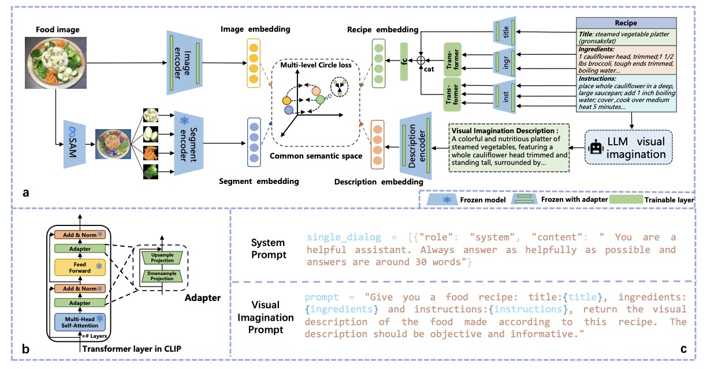
Enhancing Recipe Retrieval with Foundation Models: A Data Augmentation PerspectiveIn European Conference on Computer Vision (ECCV) , 2024 - TOMM
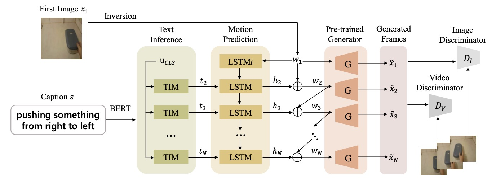
Text-driven Video PredictionACM Transactions on Multimedia Computing, Communications, and Applications (TOMM) , 2024 - TMM
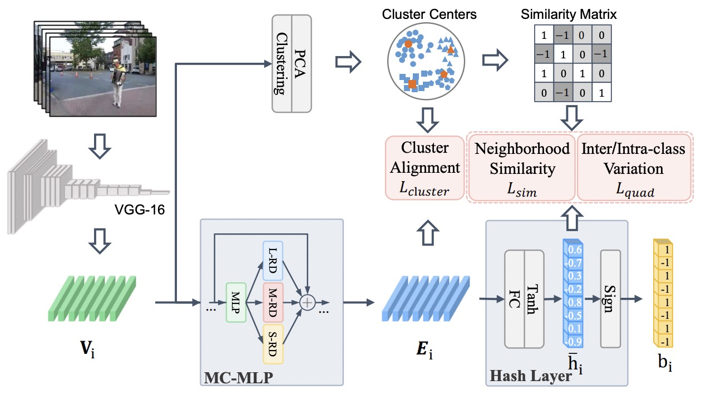
Efficient Unsupervised Video Hashing with Contextual Modeling and Structural ControllingIEEE Transactions on Multimedia (TMM) , 2024 - TMM
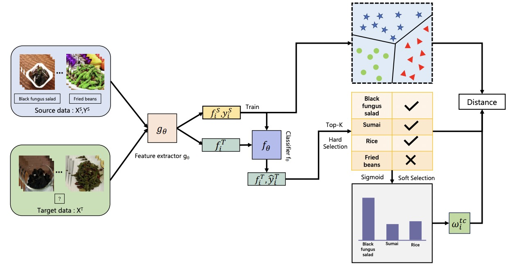
From Canteen Food to Daily Meals: Generalizing Food Recognition to More Practical ScenariosIEEE Transactions on Multimedia (TMM) , 2024
2023
2022
- ACM MM
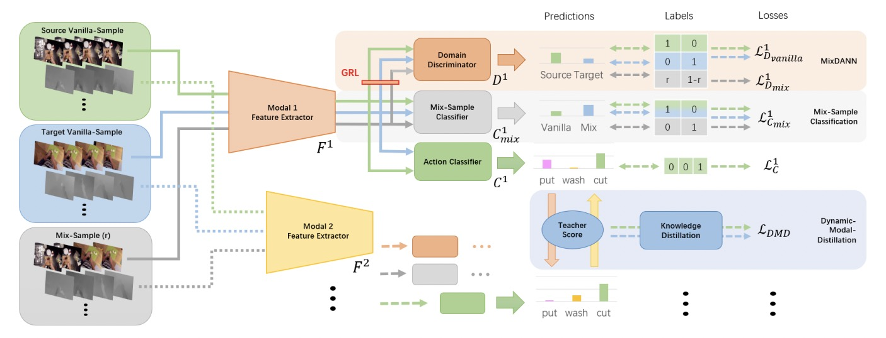
Mix-DANN and Dynamic-Modal-Distillation for Video Domain AdaptationIn Proceedings of the 30th ACM International Conference on Multimedia (ACM MM) , 2022 - ICMR
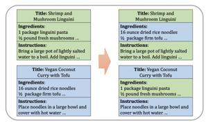
Cross-lingual adaptation for recipe retrieval with mixupIn Proceedings of the 2022 International Conference on Multimedia Retrieval (ICMR) , 2022
2021
- TMM
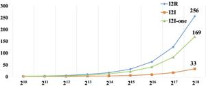
Learning from web recipe-image pairs for food recognition: Problem, baselines and performanceIEEE Transactions on Multimedia (TMM) , 2021 - TIP
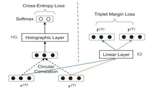
Learning to match anchor-target video pairs with dual attentional holographic networksIEEE Transactions on Image Processing (TIP) , 2021
2020
- CVPR
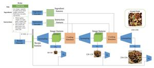
CookGAN: Causality based text-to-image synthesisIn Proceedings of the IEEE/CVF Conference on Computer Vision and Pattern Recognition (CVPR) , 2020 - ACM MM
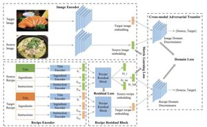
Cross-domain cross-modal food transferIn Proceedings of the 28th ACM International Conference on Multimedia (ACM MM) , 2020
2019
- CVPR
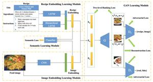
R2GAN: Cross-modal recipe retrieval with generative adversarial networkIn Proceedings of the IEEE/CVF Conference on Computer Vision and Pattern Recognition (CVPR) , 2019